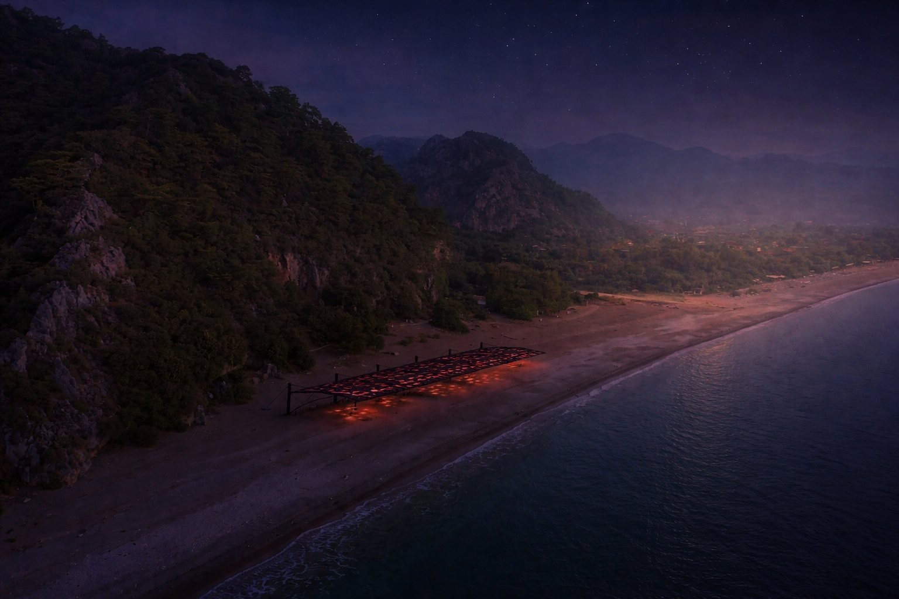
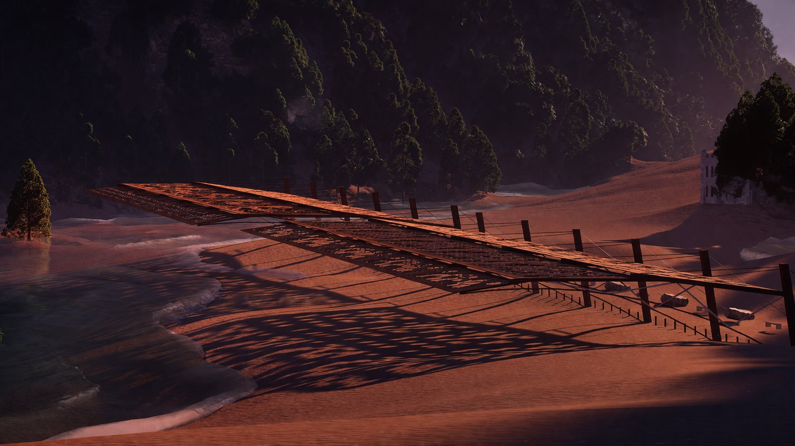
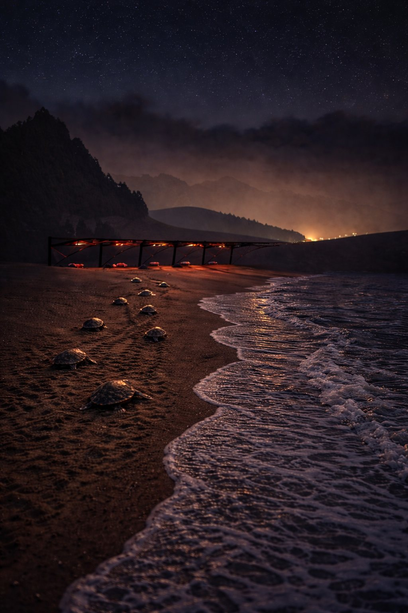
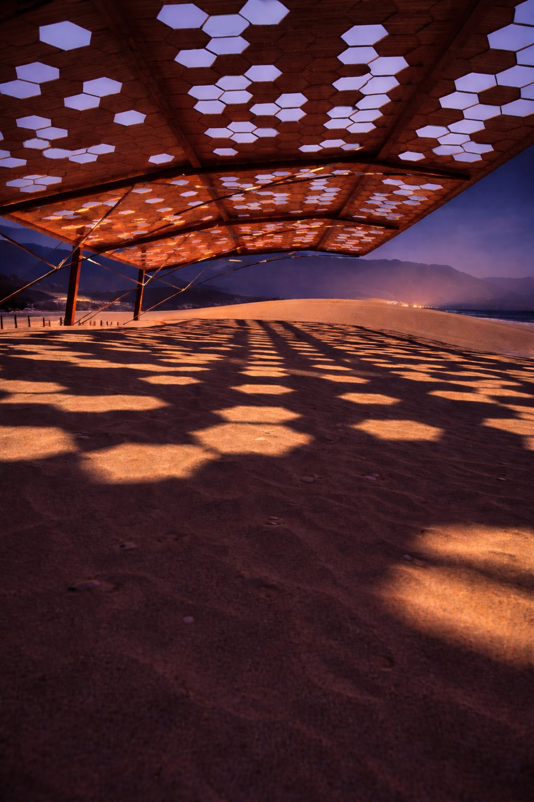
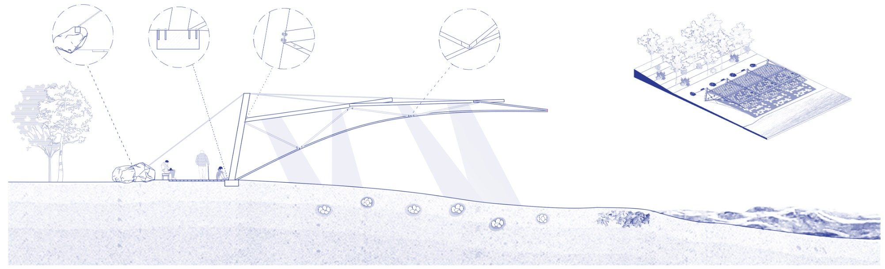
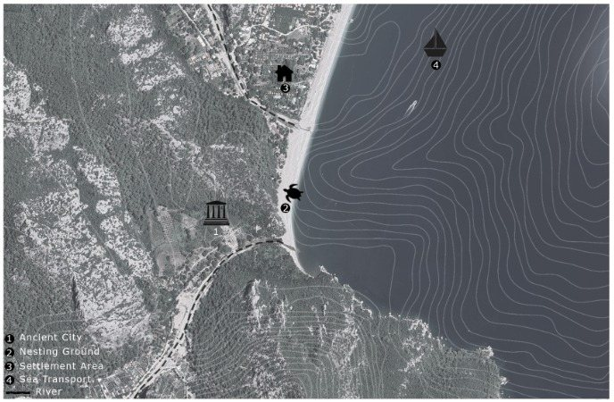
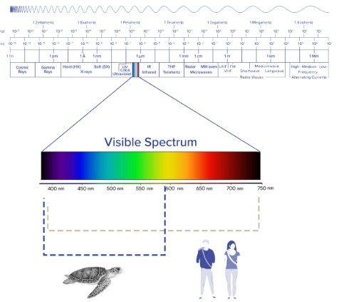
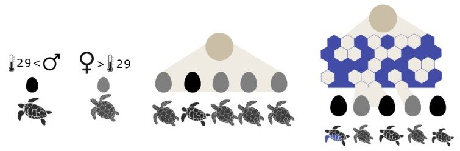
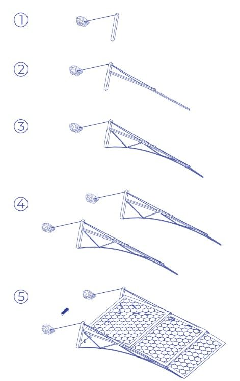
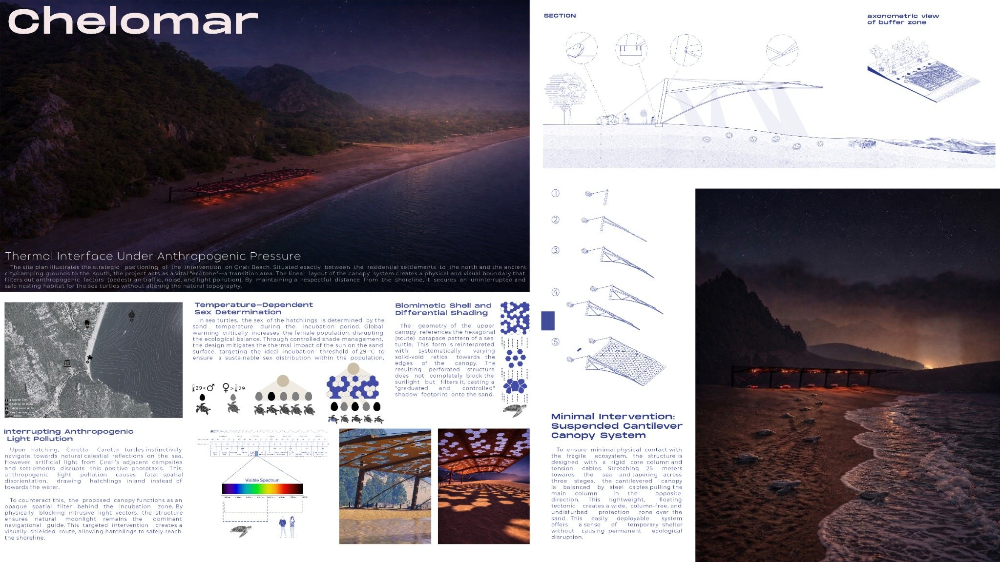

THERMAL
INTERFACE.
CHELOMAR is a light-filtering canopy on Çıralı Beach, placed exactly between the residential settlements to the north and the ancient city and camping grounds to the south. Acting as an ecotone, its linear layout forms a physical and visual boundary that filters out pedestrian traffic, noise and light pollution.
Keeping a respectful distance from the shoreline, it secures an uninterrupted, safe nesting habitat for loggerhead sea turtles without altering the natural topography.




MINIMAL
INTERVENTION.
To keep physical contact with the fragile ecosystem to a minimum, the structure is a rigid core column with tension cables. The canopy stretches 25 metres towards the sea, tapering in three stages, balanced by steel cables pulling the main column the opposite way.
This lightweight, floating tectonic creates a wide, column-free protection zone over the sand — an easily deployable, temporary shelter that leaves no permanent ecological trace.

LIGHT
POLLUTION.
On hatching, Caretta caretta turtles instinctively head toward natural celestial reflections on the sea. Artificial light from Çıralı's campsites and settlements disrupts this phototaxis and draws hatchlings inland instead of towards the water.
The canopy works as an opaque spatial filter behind the incubation zone. By blocking intrusive light, it keeps natural moonlight as the dominant guide and opens a visually shielded route to the shoreline.


29 °C.
A sea turtle's sex is set by sand temperature during incubation, and global warming is pushing populations female. Through controlled shade, the canopy lowers the sun's thermal impact on the sand, targeting the 29 °C threshold for a balanced distribution.
Its upper surface reinterprets the hexagonal scute pattern of the turtle's carapace, with solid-void ratios that vary towards the edges. The perforated shell filters rather than blocks sunlight, casting a graduated, controlled shadow onto the sand.


FULL
BOARD.
UNCROPPED / ORIGINAL COMPOSITION
